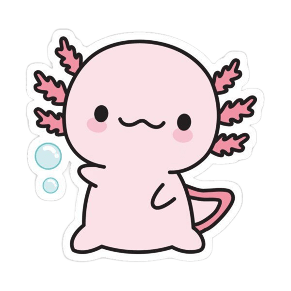

Ajolote
Hábitat: Lagos y Canales de agua dulce al sur de la CDMX (principalmente el lago de Xochimilco)
Alimentacion: Carnivoros, pequeños invertebrados y peces
El ajolote es una salamandra endémica de México, de aspecto larvario, con branquias externas plumosas que sobresalen de su cabeza y una aleta dorsal que recorre su cuerpo. Pueden medir de 15 a 30 cm de largo, y su piel varía de color, siendo en la naturaleza comúnmente marrón con motas, mientras que en cautiverio se crían de colores más claros como rosa o blanco.
Datos curiosos
- Regeneración: Pude regenerar extremidades y órganos vitales, además de que acepta transplantes de otros ajolotes
- Genoma: Su genoma es uno de los más grandes del reino animal
- Fue nombrado símbolo cultural de la CDMX